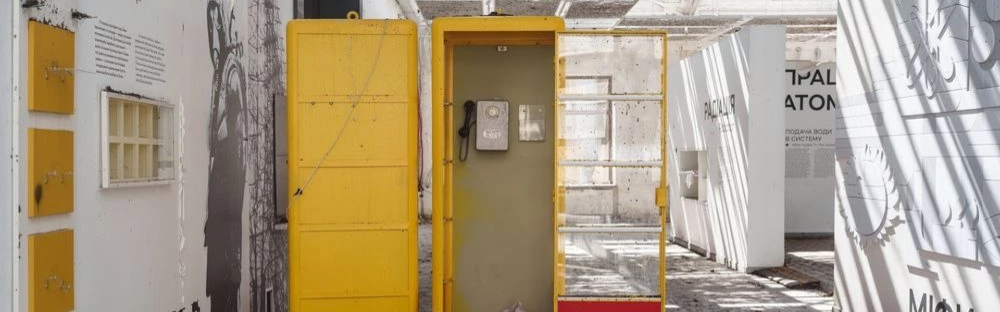
“Lost Worlds.” How the Russian strike ruined the Chornobyl Museum in Kyiv
21.07.26
Above the roofs of Podil¹, a brick tower rises, built in 1910 for a former fire department: firefighters on duty were on lookout here to spot fires in the city. In the 1980s, firefighters from the Kyiv Regional Fire Department worked here. After the disaster at the Chornobyl² Nuclear Power Plant (CNPP) on April 26, 1986, representatives from the department participated in extinguishing the fire at the destroyed reactor #4.
Six years later, the Chornobyl Museum opened in this yellow brick building; the firefighters collected the first exhibits. They launched a photo documentary exhibition dedicated to the anniversary of the Chornobyl tragedy; it later became a permanent display commemorating the country’s largest man-made disaster.
The museum’s funds were accumulated over the years, and it eventually became one of the world's largest archives on the Chornobyl disaster. Here, documents from government commissions, technical materials from the CNPP, personal belongings of the response team, and household items from the Chornobyl Polissia³ region are on display.
On May 24, at night, almost all of these items were buried by fire, water, a layer of dust, and glass shards. During a massive air raid on the capital, a Russian missile destroyed the building of the Chornobyl National Museum. It opened after a renovation only one month before the attack. The museum employees managed to evacuate most of the exhibits in the morning after the strike, but some artifacts were lost for good, and the building is severely damaged.
Under the tall fire tower, only fragments of walls and floors remain. Light-yellow brick is torn with cracks. A line of broken pavement runs along the facade, and in the courtyard, the ground is covered with piles of broken bricks, plaster fragments, and metal fragments.
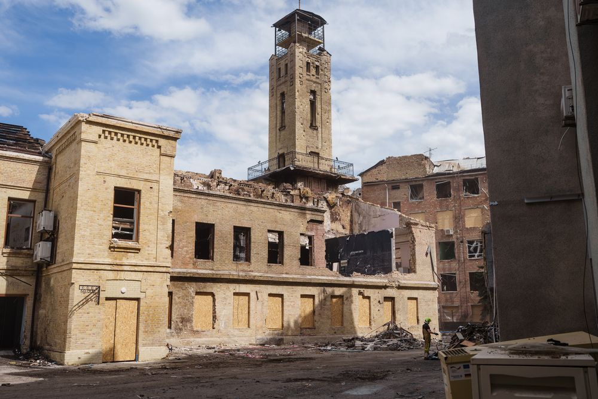
Among the destroyed walls, we catch a glimpse of a line art mural of silhouettes of houses, trees, and churches, signed “Lost Worlds.” The display fragment on the lost settlements of Polishchucks⁴ is now in ruins. Before the strike, a wooden boat, ochre clay jars, rushnyks⁵, and a wooden spindle were placed next to this wall. Photos, information panels, and artifacts were telling the story of the lost settlements of the Chornobyl Polissia. Now, this wall is open to the elements.
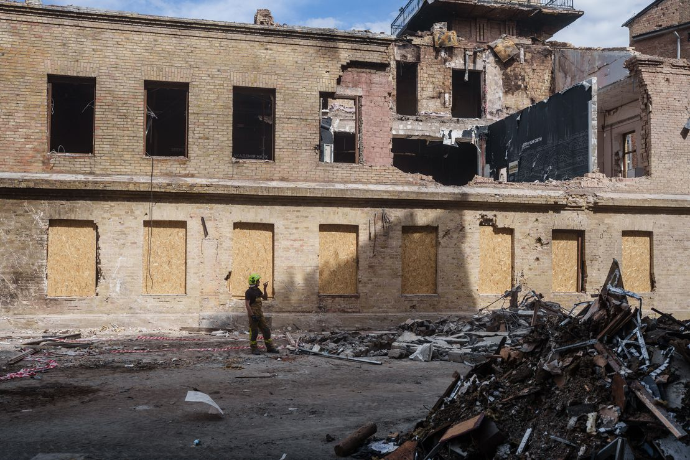
From the front entrance, the destruction seems less severe. A couple of windows are bolted with OSB boards; most are askew, the sashes hang over the sidewalk in unnatural angles, and over the gate, there’s a sign: “Watch out! The facade is unstable. Beware of falling bricks!” A dark green car with a crumpled roof and shattered windows stands nearby.
Inside, the museum smells of dampness, and the floor is wet. Along the corridor, the cleaners are placing plastic buckets of different colors and sizes to collect water dripping from the roof. When I walk inside, rain begins to pour.
“We are removing trash every day: water, glass, rubble, furniture fragments,” Vitalina Martynovska, the General Director of the Chornobyl National Museum, says. She has been heading the institution since February 2022.
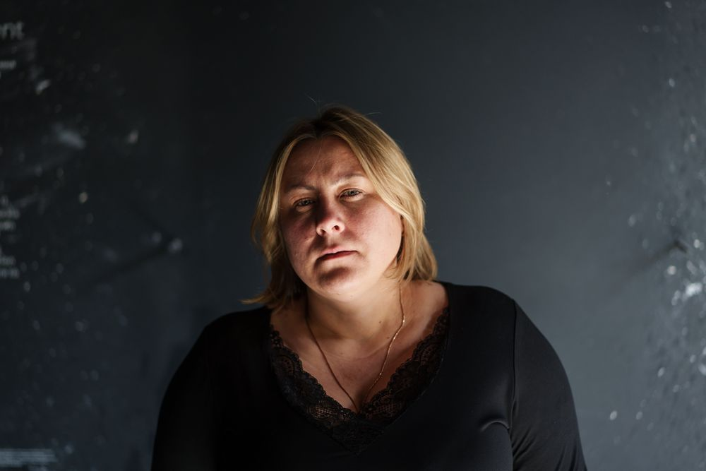
“There’s no roof, part of the building, or floors above us. And the floors that survived were shifted by the shock wave. Where they had enough bearing area earlier, they now have none and are partially hanging in the air. So, the situation is difficult,” the director says.
“We were so glad it wasn’t raining last week,” she says, ascending the stairs to the second floor. Remnants of structural elements have shifted and become waterlogged; the director is worried that some of them may collapse at any moment, so we look at the aftermath of the destruction from the other side of the threshold.
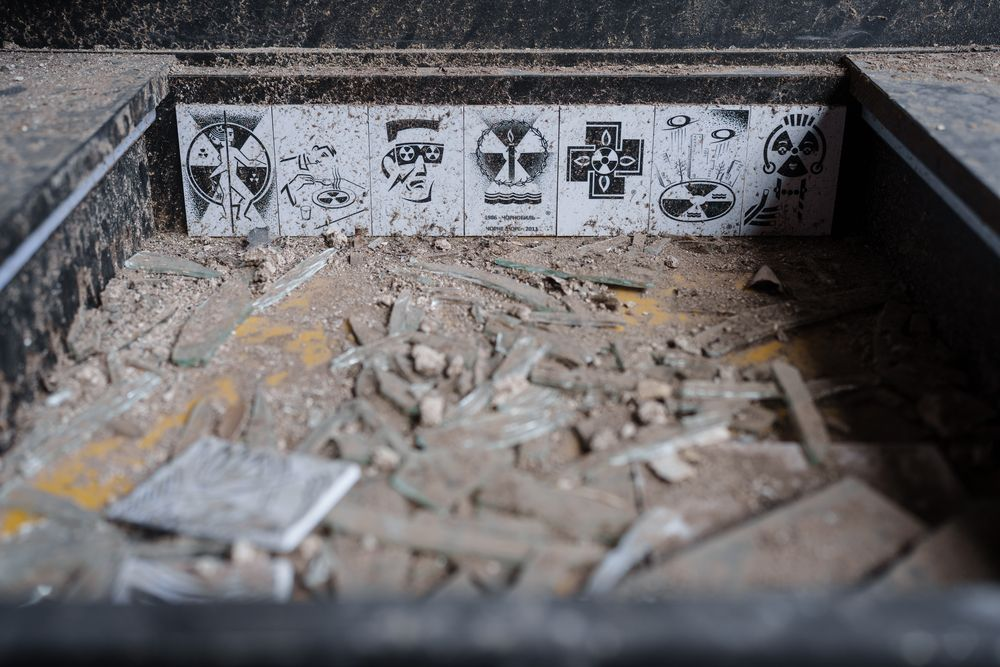
Across from the stairs, there’s a bright room with depleted display stands. “RADIATION” is written in bold black letters to the left; it was the title of one of the exhibition’s areas, which explained what radioactive emissions are and how they affect people and the environment.
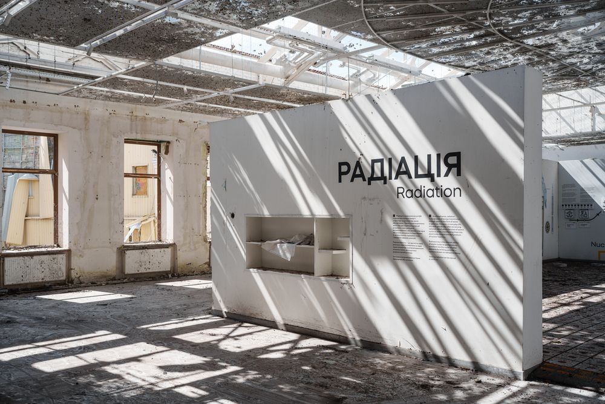
The surface is covered with trickles of water, the floor with wet dust. To the right is the “Chornobyl’s Myths” display, an exhibit with boxes that visitors could open. An oval metal frame is among them; there were screens not so long ago.
A bright yellow phone booth is nearby; it was one of the museum’s interactive exhibits. Inside it, there’s an authentic phone from the 1980s; the museum’s visitors could “make a call” to 1986 and listen to recordings of memories from the response team and locals from Prypiat⁶.
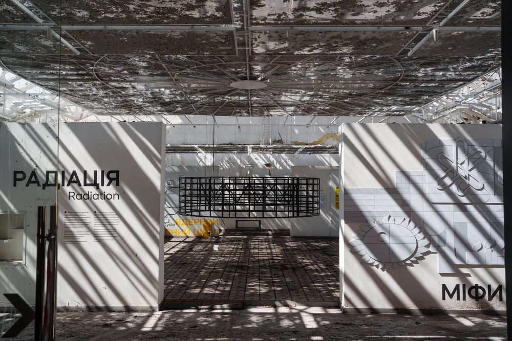
The ceiling was most severely damaged: part of the suspended structure is now a bare metal frame with charred cladding fragments.
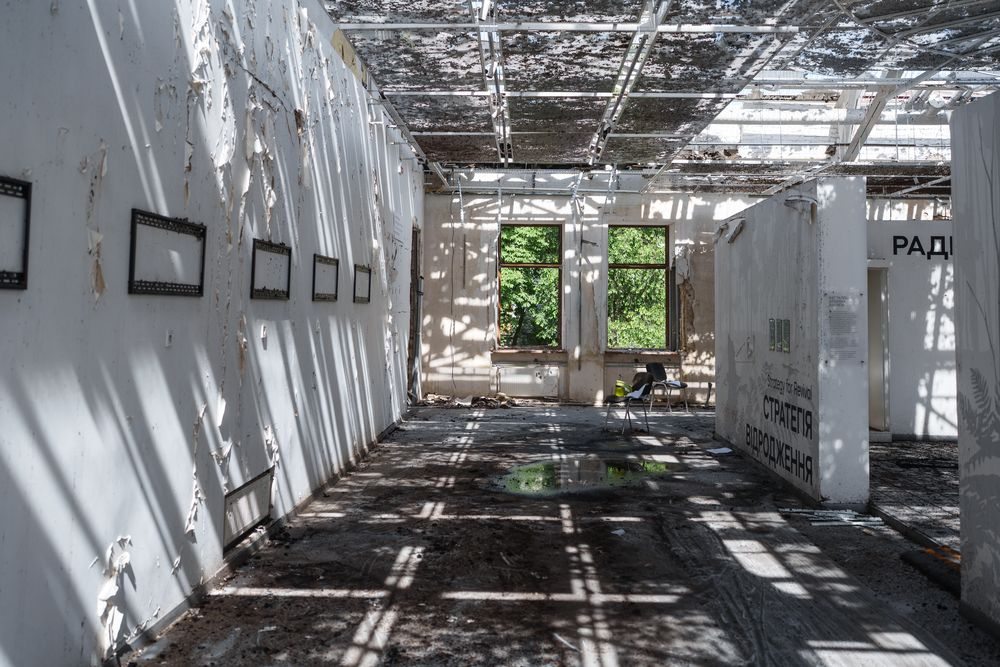
The next room, aside from the ceiling, has lost its internal structures. Dark grey boards with text about the history of Chornobyl and expeditions to the exclusion zone line the wall. Ventilation pipes, cables, and metal beams hang overhead.
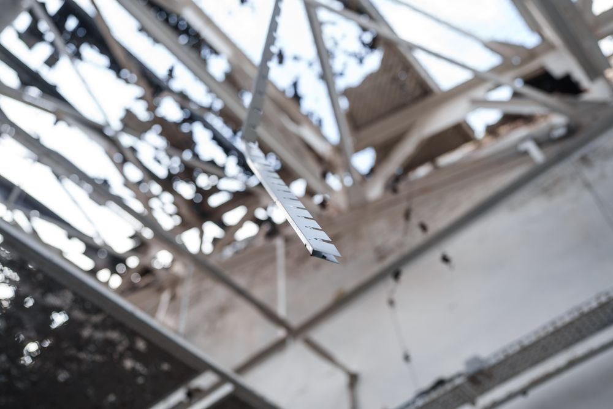
The floor is covered with water and fragments of decor, and plates with struck-through city names from the exclusion zone lie next to the water pools. They reminded the visitors about the settlements that were abandoned after the CNPP disaster.
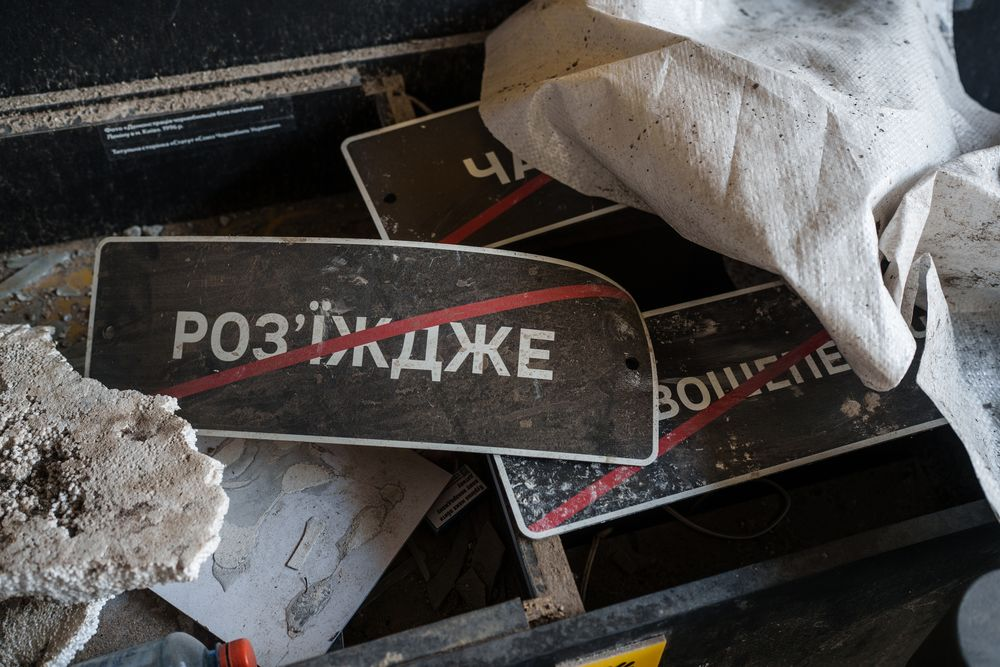
The day before the explosion
On April 26, on the 40th anniversary of the Chornobyl disaster, the museum reopened after the renovation. On that day, Rafael Grossi, the Director General of IAEA, and Ukraine’s President Volodymyr Zelensky visited the museum.
The new museum’s concept envisioned broadening the display’s scope: from the history of the Chornobyl NPP and the disaster itself to the broader context of nuclear energy’s development, its current state, and its prospects. The display was enriched with interactive exhibits that allowed visitors to explore the effects of chemicals on the human body, understand the operating principles of a power plant, and visualize the structure of a reactor.
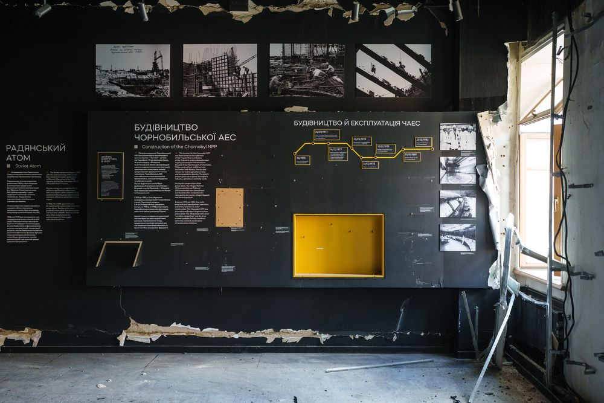
In collaboration with professionals from the Chornobyl Biosphere Reserve, the museum created a block dedicated to the flora and fauna of the exclusion zone. Multisensory installations were added to the display, including a box that broadcast sounds from the exclusion zone, allowing visitors to feel its atmosphere for a couple of seconds.
The first floor became a public space. A cafe, a multimedia hall for lectures and movie screenings, a separate exhibition hall, and a co-working space were set up here. It was planned as a workplace for researchers and anyone else working on the topic of Chornobyl. One could gain access to the library after an advance request: researchers could request the needed books from the museum’s vault and work with them.
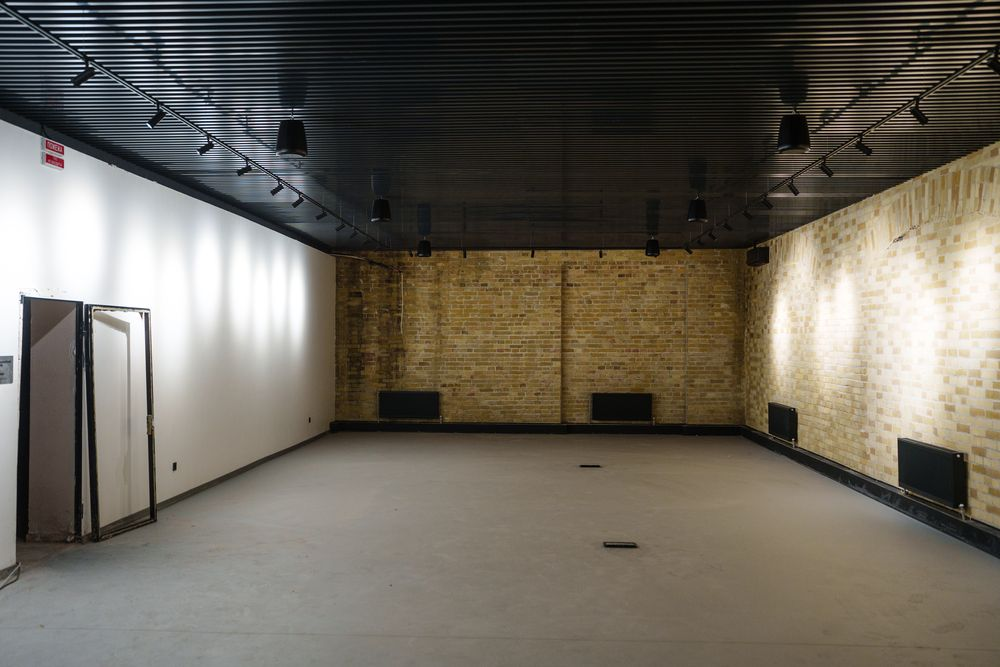
The main display, “Chornobyl: People and Meanings,” was located on the second floor. It consisted of two parts, historical and educational. The former was dedicated to the nature and ethnography of Polissia before the CNPP disaster; the construction of the plant; the night of April 26, 1986, when the disaster occurred; the evacuation of the people; the response and elimination of the disaster; and the social and ecological aftermath. A separate block was dedicated to the Russian full-scale invasion: the seizure of the plant in February 2022, its occupation, and liberation.
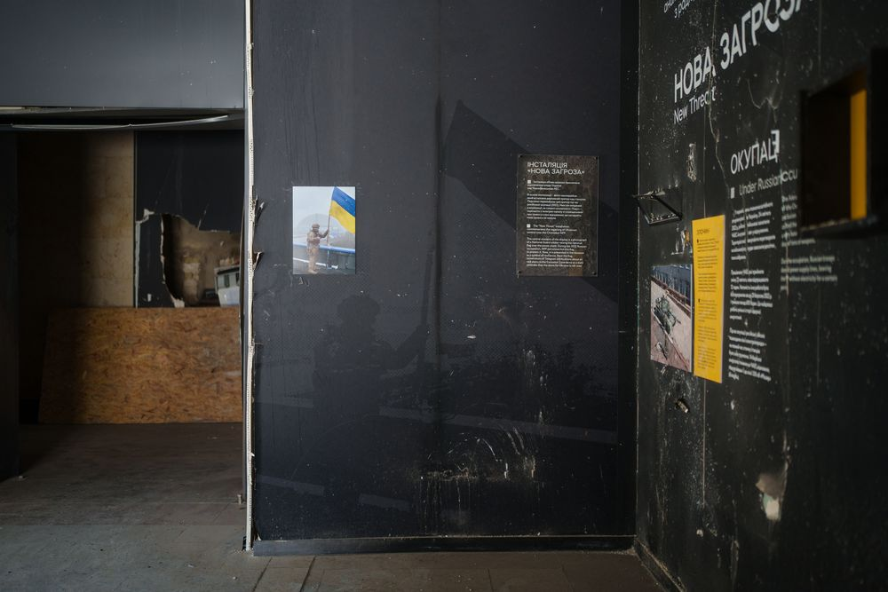
The educational part was dedicated to nuclear energy, the specifics of nuclear plant operations, the effects of radiation on the body, etc. Visitors could see a moving model of the CNPP, hear sounds from the exclusion zone, and put on gear similar to that used during the disaster response.
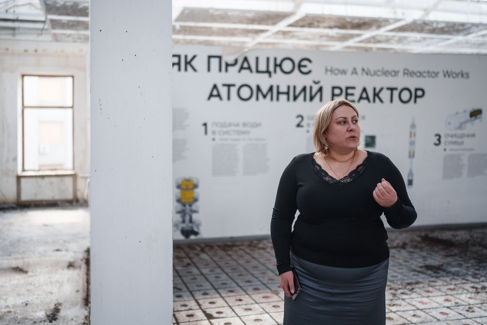
On the third floor, educational spaces were opened. In the museum’s lab, it was planned to teach school students to use dosimeters, acquaint them with Chornobyl artifacts, and conduct interactive classes. Separate rooms were dedicated to artistic and ethnographic classes about the culture and everyday life of Chornobyl Polissia. In the VR area, visitors could take a “walk” through Prypiat and the exclusion zone.
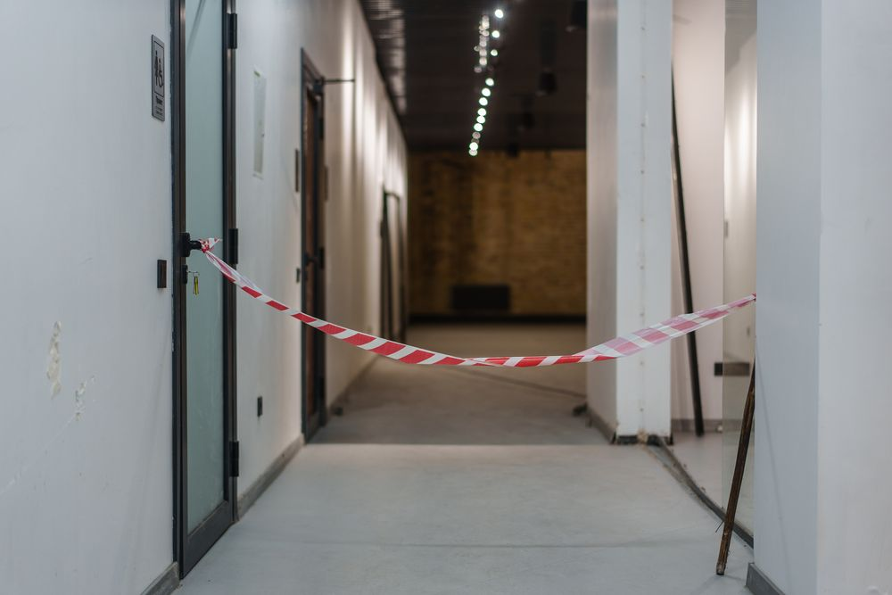
They could also ascend to the top of the renovated fire tower for a panorama of Podil. Plaques were installed on the tower’s observation decks, pointing visitors to significant buildings, streets, and sites.
“We were mostly booked out every day. We didn’t want to lose a demand that high, so we constantly communicated with potential visitors. We had a booking list for the next two months, around 20 groups each day,” Vitalina Martynovska says.
The day before the explosion was as busy as always; the director underlines: “The museum was alive.” And this liveliness lasted here for less than a month.
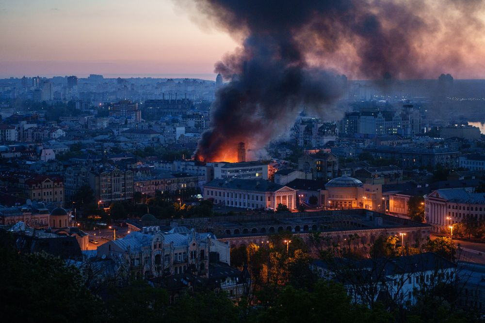
The morning after the attack. Salvaging the exhibits
The museum’s director found out about the fire at 5 AM on the night of that massive air raid.
“My friend, who lives nearby, called me. He said he saw a hit in Podil and smoke over our tower. I came in about 20 minutes. Firefighters were already extinguishing the fire. On my way there, I still hoped it was just an ignition that could be swiftly put out. I understood that we’d have to evacuate the exhibits, but had no idea what I would see inside — that, from the courtyard side, a part of the building was already missing,” she remembers.
We don’t have an official conclusion yet on whether this was a direct hit or damage from missile fragments. But, in one of the exhibition halls on the second floor, the tail section of the missile was found. Investigators are to identify its type.
Preliminary conclusions indicate that the main impact was on the neighboring building, and the museum was damaged by the shock wave and fragments. The buildings are located very close to each other — there was even a passage between them that was destroyed by the explosion.
The shock wave tore out, distorted, and scattered the gates, shattered most windows, and ruined the brick arches of the Chornobyl Madonna sculptural ensemble to the left of the entrance.
“I saw smoke and fire, and then, I heard cracking, the sound of metal structures collapsing — the roof from the courtyard side started to fall down.”
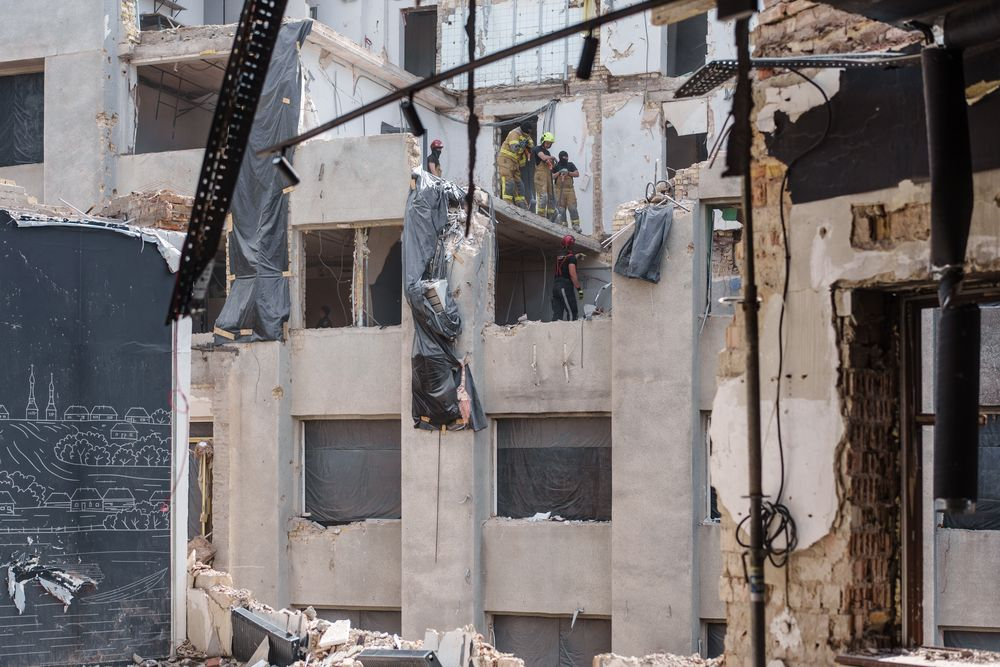
Vitalina texted the work chat immediately and asked the colleagues to wait for the instructions on when to come to the museum. The custodians of the funds, who knew the collections and could begin the evacuation, were to come first. They also coordinated with the response workers, who checked the route and led the way.
“There was so much water in the building. We understood we needed protective shoes. The response workers gave us boots; these were men’s boots, size 45⁷. And I, together with Alla Tsvilii, the Chief Fund Custodian, put on those boots and hard hats, and followed them. Inside, it was all glass. There were many glass structures in the museum — doors, partitions. On the second floor, all of them were destroyed. Just the sea of glass and water,” she adds.
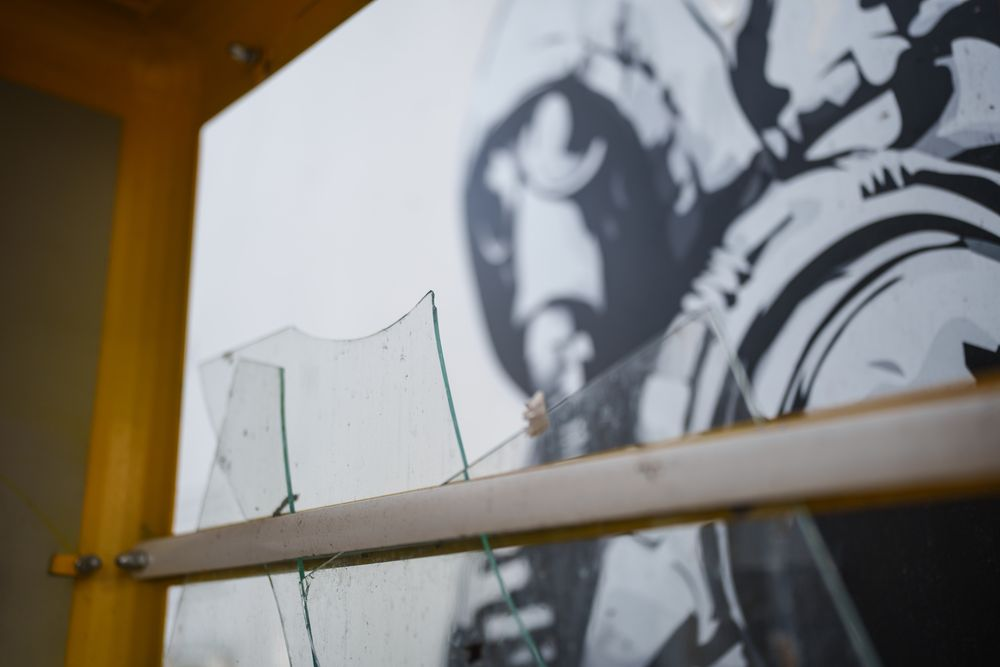
In a couple of hours, the employees moved all the items out of the vault. After the renovation, the vault was transferred from the third floor to the first. According to the director, this decision proved correct: the third floor was completely destroyed. In the vault, she says, newspapers, the response team’s personal belongings, declassified documents, and other materials were kept. They survived.
After the vault was evacuated, the employees moved to the exhibition halls on the second floor.
“It was scarier to work there because we heard the structures collapsing. We grabbed the items and ran out immediately — we understood that something was falling nearby. The fire was still being put out. To the very end, none of us had a full picture: would there be a second hit⁸? Would something else happen?” the director says.
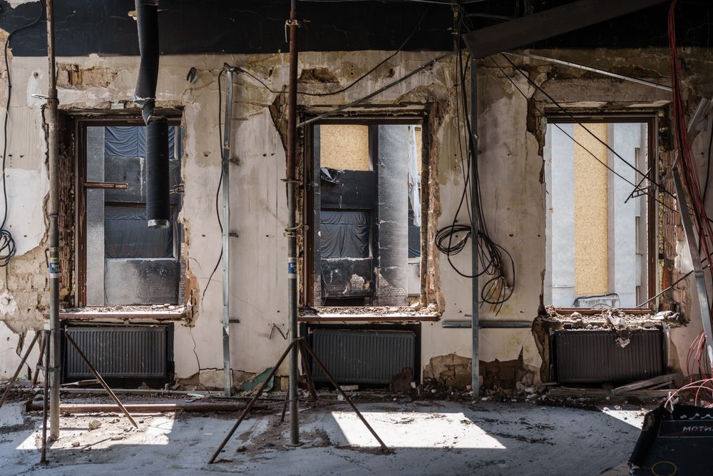
After the funds were evacuated, their attention turned to the computers, office appliances, and other equipment. A large part of the exhibition infrastructure was beyond rescuing.
“There was a large installation — five screens where we presented the current state of the exclusion zone, the pictures of the Chornobyl Biosphere Reserve. We had a large cylindrical screen in the center, over 3 meters in diameter. We used it to broadcast content about the development of the nuclear era and ways to harness nuclear energy. In the exhibition hall on the first floor, we also had a large screen,” Vitalina Martynovska says. “These were very expensive things, a rather complex technical equipment, not all museums can afford this. We could, but, unfortunately, we’ve lost it.”
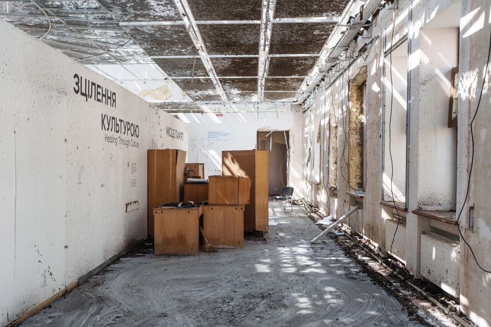
Almost all the employees were involved in the evacuation, the director says. Part of the team was working with the funds, and the other part was moving out the equipment, furniture, and documents. The Ministry of Internal Affairs, which has jurisdiction over the museum, decided on the temporary location for the collection and property. The location is not being disclosed for safety reasons.
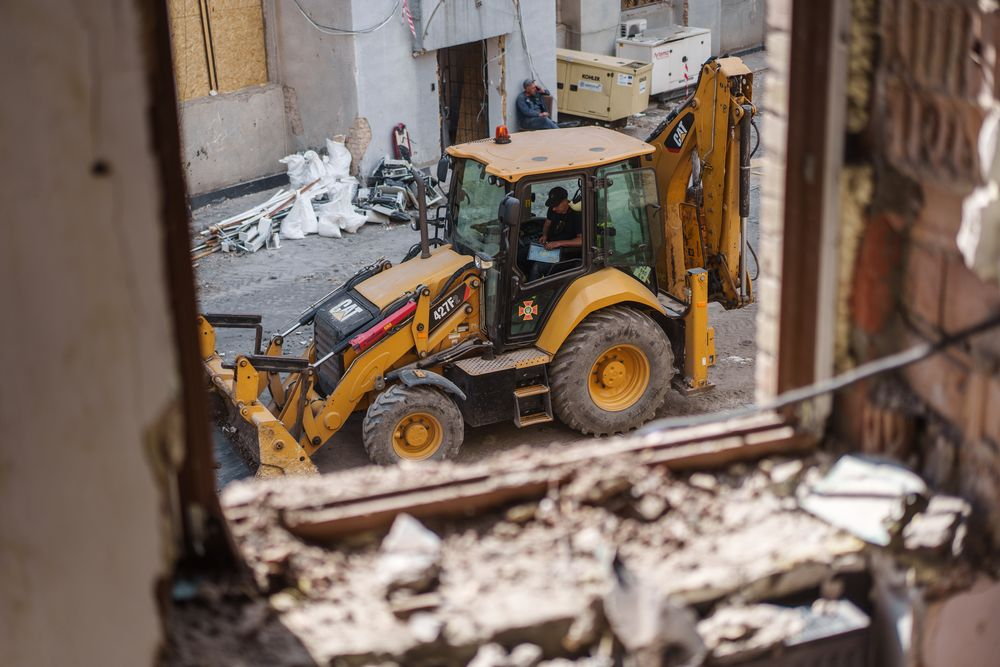
The rescued artifacts
After the artifacts’ evacuation, the Ministry reported that 40% of the museum’s display items were lost for good.
Search operations lasted for six days. The debris was cleared away by hand, meter by meter, without knowing what lay beneath the rubble. A couple of days later, the picture started to change.
“We’re not talking about 40% anymore. We gave this number on the first day, when we still didn’t know whether we would find anything during the search operations. Fortunately, the colleagues managed to find over 100 objects. They are in different conditions: some need professional restoration, but there were the exhibits — it’s a miracle — between two floors, we found a jar from Polissia that was gleaming, there wasn’t even dust on it,” Vitalina Martynovska says.
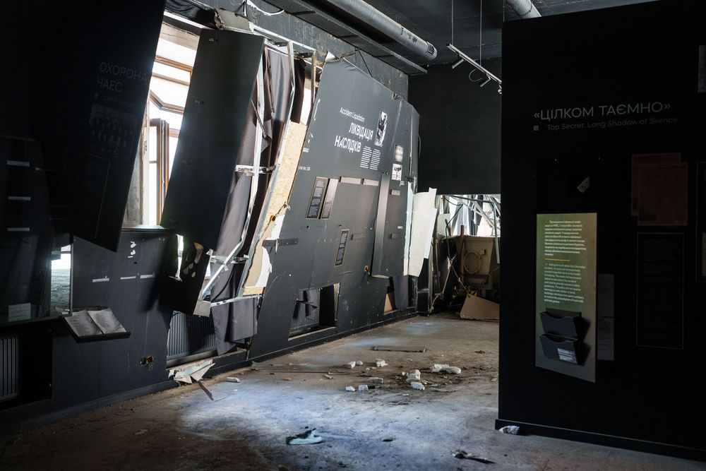
The main impact affected the part of the display dedicated to the history of Chornobyl and the ethnography of Polissia. There, items brought from churches after the first expeditions to the exclusion zone were on display: Bibles, old prints, and documentary photographs.
“We understood that there, the losses would be largest. Currently, trying to remember what was in which glass case and where, we’ve realized we’ve lost up to 10 exhibits. Among them are a copy of the Chornobyl Savior icon, a couple of ethnographic items, and church items. Some paintings were really severely damaged; these are works by the response team, their reflection on what they’ve lived through. We’ve already contacted the authors. Some said ‘Don’t worry, I have a copy’, others promised to paint another one,” the museum’s director tells us.
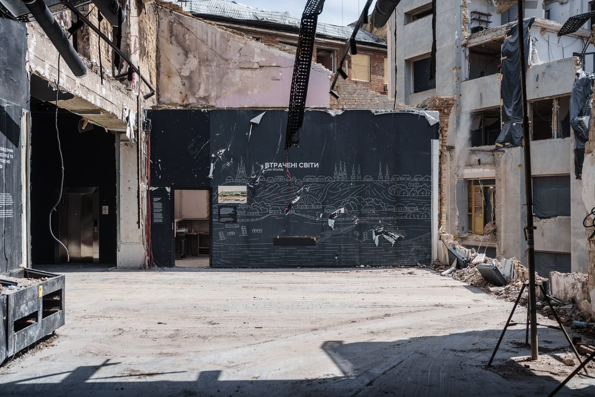
The list of the surviving items turned out to be longer than expected: the Ukrainian flag raised over CNPP after the deoccupation in 2022, a painting by Maria Prymachenko⁹, a stamp from the Chornobyl river port, a teddy bear from the exclusion zone, a Bible from 1912, personal belongings of doctors, and awards for the response team.
“We were worried about them because these are small things — orders and medals — and they could fall anywhere, but we found all of them,” the director says.
The inventory of the funds is currently underway: there are around 23,000 exhibits in the museum’s collection. According to Martynovska, a large part has been digitized, but the process is far from complete.
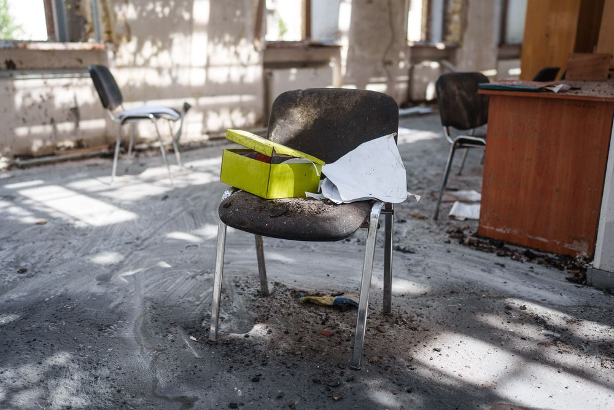
“There are items we scan ourselves, and there are those that require a full 3D scan and professional processing. We have digitized a lot, but there are still things to work on. I would love to have all our objects professionally digitized. And only when the whole collection is documented in this way can we talk about the complete digitization. We will continue this work after the inventory. We live in times when everyone should digitize everything,” the museum’s director explains.
I ask, what was hardest after the impact. “To go to work the next day,” Vitalina Martynovska says through the tears. For a couple of seconds, she stays quiet, wipes her face, and then continues:
“I understand that people are depending on me. They’ve been working at the museum longer than me. Some for over 20 years. They don’t have any other employment options; they're deeply involved with the topic of Chornobyl. We can’t lose those people. We have to react quickly to everything, sort through the objects we salvaged, evaluate the condition of our property, and gather and unite people around the collective goal of potential reconstruction. The reconstruction won’t be easy, because the building is heavily damaged.”
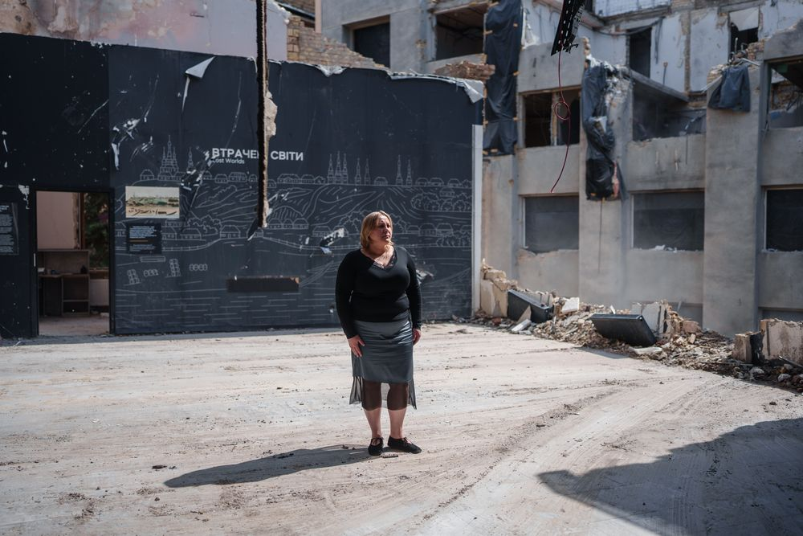
Currently, the experts are conducting a visual inspection of the building, evaluating its technical condition, and assessing the feasibility of reconstruction. A group of experts must define a preliminary cost estimate for the reconstruction. Their work needs time, according to Vitalina Martynovska: the building has over 2,500 square meters, and part of the renovation works hadn’t been fully approved and formalized before the hit, which complicates the evaluation of the aftermath.
Chornobyl as a keepsake. Lost for the second time
On the first floor, across from the museum entrance, there’s an almost undamaged information and souvenir area. On the light wooden wall, words are arranged that characterize the museum. At the center of the word mosaic is the word “Chornobyl”; words “Explosion,” “CNPP,” “Radiation,” “Disaster,” “Liqiudators,” “Memory,” and “Rebirth” surround it. The shelves along the wall are empty. Not long ago, there was a souvenir shop here.
“Over two years ago, we offered to create a service zone here. The idea was simple: the museum has to be comfortable for people — there should be a place to wait for a guide, drink coffee, or buy a souvenir. It’s a usual European practice which we didn’t have earlier,” Yaroslav Yemelianenko, an entrepreneur and the Head of the Association of Chornobyl Tour Operators, says.
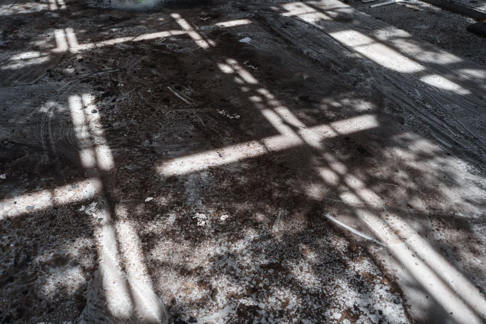
After the full-scale war began, his team lost information centers in the exclusion zone, so a new store at the museum was an opportunity to preserve jobs. However, the Russian army has destroyed the space he created for the second time.
“Even before 5 am, I was already here. The roof was burning, but the full scale of ruin became visible only when I was allowed to get inside,” he remembers.
He managed to salvage some of the items, but paper items didn’t survive the water used to put out the fire.
“The books by the response team with autographs haven’t survived, unfortunately,” he says.
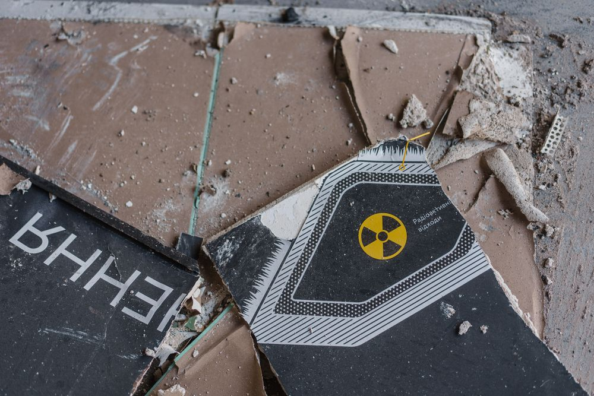
Most of the metallic artifacts, on the other hand, survived, and some items gained new meanings. After Yaroslav published a video about “Chornobyl vyshyvankas¹⁰” that were damaged by water, a military member texted him to ask for one.
“He says: I’m an active-duty military member, and I need this vyshyvanka specifically, because it’s the history of our survival. It was important for him to get the shirt that suffered from the Russian missile,” Yemelianenko says.
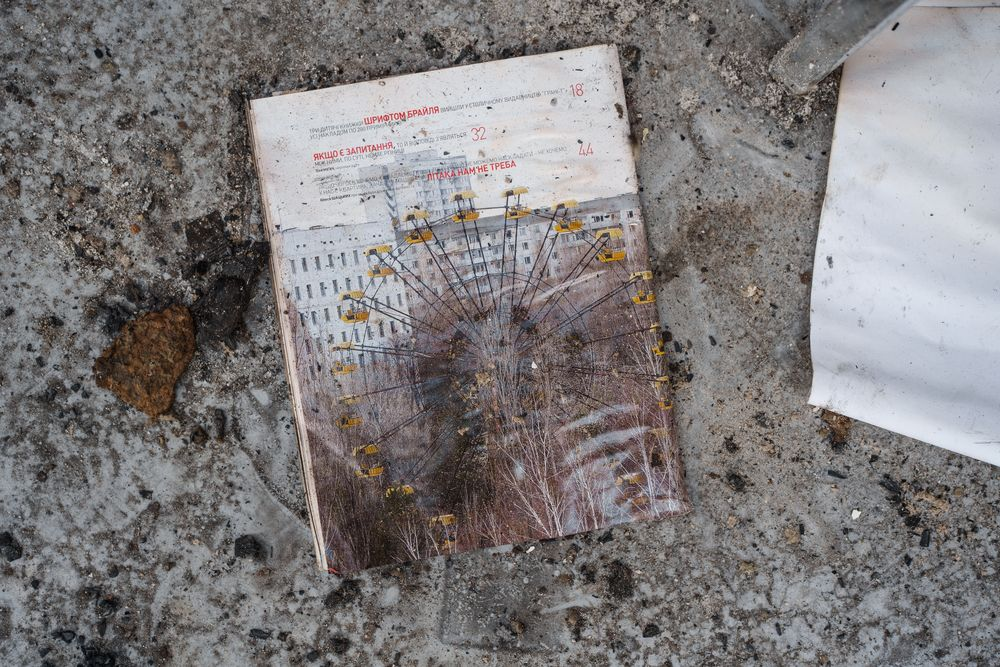
What next?
Currently, a supervisory board is being formed, and international partners and donors are expected to participate. It’s supposed to coordinate the reconstruction process of the Chornobyl Museum.
“There’s a definitive decision by the minister that the museum has to be rebuilt. It’s not just a matter of infrastructure for us, but also dignity,” Vitalina Martynovska emphasizes. “We, as the museum team, promise to do everything we can to start the reconstruction as quickly as possible. I want so much for the voice of the museum to be heard, for the colleagues to have more confidence that it will renew its operation.”
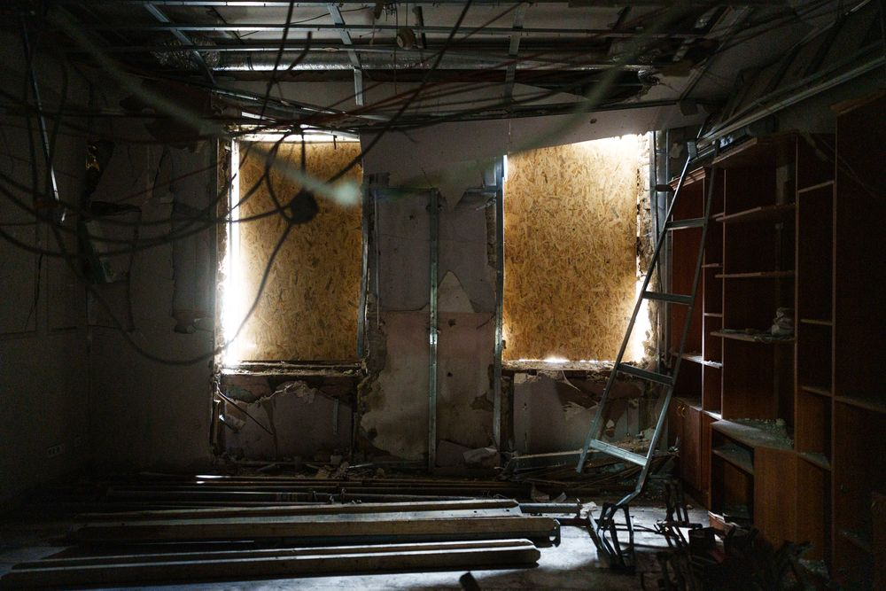
Employees of the museum say the issue of reconstruction isn’t just about technical solutions but also about the scale of the resources required. The team considers the cost of modern building materials and understands it will be a significant expenditure, especially given the lessons learned from previous renovation work.
“We understand that it’s a very costly endeavor. And now, considering the scale of destruction, the sum will be significant,” the director says.
Anyone who is able to do so can contribute to the reconstruction; the charity accounts are listed on the institution’s website.
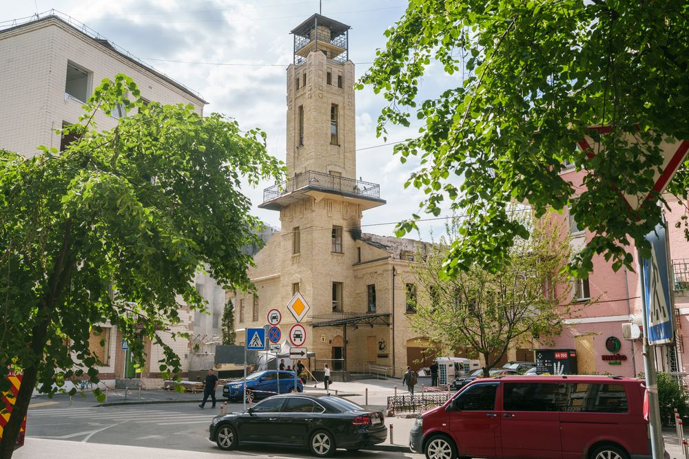
***
The rain over Podil subsides, so the cleaners can rest for a bit. The space that has recently been telling visitors a comprehensive story has become a place where it must be collected anew: from fragments, debris, and recovered artifacts. Maybe this air raid and its aftermath will become a new display in the future museum.
Footnotes
1. Podil is a historical district in Kyiv, the lower part of the historical city center.
2. Although in English, the spelling "Chernobyl" is still widespread, it's derived from the Russian spelling. In Ukrainian, the city's and the Power Plant's names are "Chornobyl", and therefore we will use this spelling throughout the article.
3. Polissia is a large historical region in northern Ukraine; the CNPP was situated there. The disaster impacted many surrounding villages, and people had to be evacuated outside the contaminated zone, leaving their homes and personal belongings behind. A large part of the local culture was lost in the process and is now only displayed in museums.
4. Polishchucks are a name for native inhabitants of the Polissia region.
5. A rushnyk is a Ukrainian decorative or ritual piece of long linen or cotton cloth, usually embroidered with patterns traditional to the region.
6. Prypiat is a city built specifically for employees of the power plant in the 1970s, now abandoned because of the contamination.
7. In Ukrainian size system, 45 is relatively large even for men's shoes or boots.
8. It's often the case that Russian missiles target the same location for the second time after the emergency response team arrives at the spot.
9. Maria Prymachenko was a prominent naive artist who worked mostly in Soviet times and was famous for her fantastic animals; she painted a couple of works about her own reflections on the Chornobyl disaster.
10. A vyshyvanka is a traditional embroidered shirt, the most popular piece of historical Ukrainian clothing.
The reportage is published with the support of the Alfred P. Sloan Foundation.